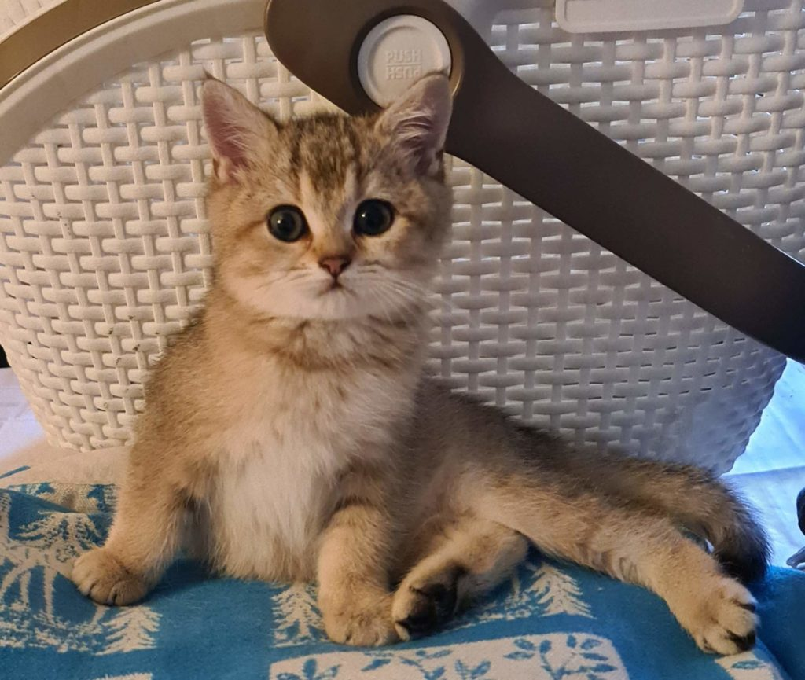
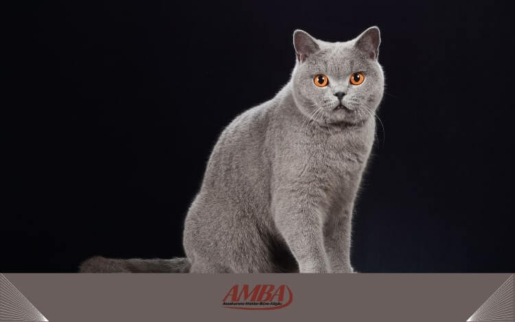
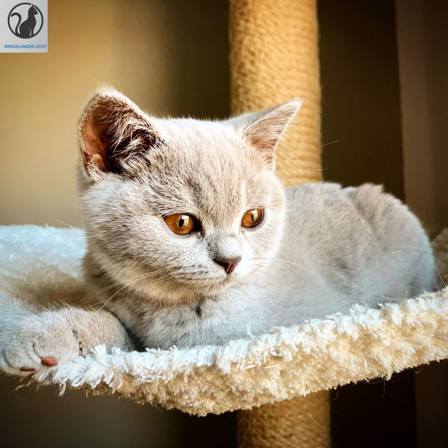

Die Britisch-Kurzhaar ist eine beliebte Katzenrasse mit dichtem, plueschigem Fell und einem kraeftigen, runden Koerperbau. Sie gilt als ruhig, ausgeglichen und sehr anhaenglich gegenueber ihren Menschen. Besonders bekannt ist sie fuer ihre grossen, runden Augen und das freundliche Wesen.


